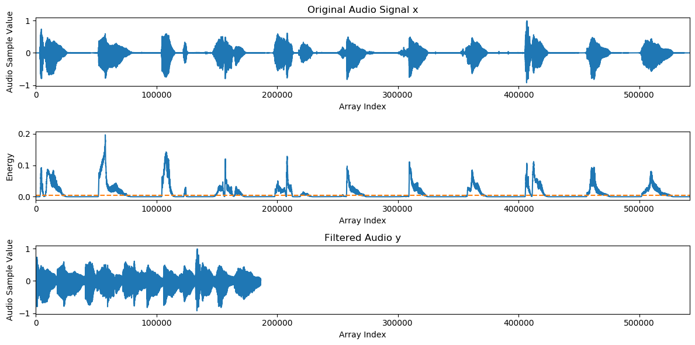
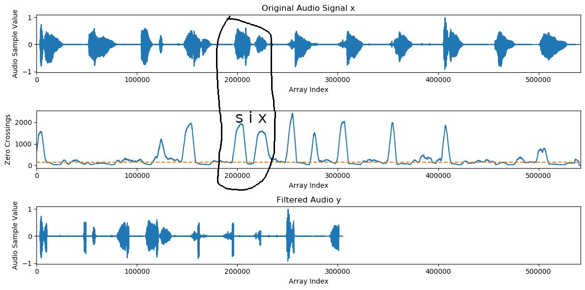

Audio Filtering Array Exercise
Chris Tralie
Overview
The purpose of this exercise to give students practice with dynamic arrays, loops, and methods in C++ Java by implementing a "filtering" method, in which parts of an audio clip are removed based on different criteria.
Code
You can obtain the code/audio for this exercise by typing
git clone https://github.com/ursinus-cs174-s2022/Week3_AudioFiltering.git
Overview
Digital audio can be represented as an array of doubles between -1 and 1, which we refer to as samples. In this exercise, you will fill in a method filter that takes in a sequence of audio samples x and creates a new array of audio samples y which is a subset of x. There are three options, and you should implement at least one. Each option consists of the following steps:
- Count the number of samples in
xthat are above or below a certain threshold ("energy" for loudness filtering or "zero crossings" for vowel/consonant filtering). This will be the length of the new array you make -
Dynamically create array
yof the appropriate size. -
Copy over the values from
xtoythat exceed a threshold.
Below is more information about what the thresholds are for the three different options:
Option 1: Loudness Filtering
The method getEnergy returns an array parallel to the array of audio samples that contains the "energy" of the audio in a small window around each sample. In particular, energy[i] holds a number between 0 and 1 which is the mean of the square of the audio samples in x between indices i-win and i+win. energy[i] is higher if the audio samples in x around index i are louder, and lower otherwise. Let's say, for example, that we have the following audio:
Below is a plot that shows the original samples of x (top plot), followed by the energy array (middle plot). The regions in which the person is speaking have higher energy, and the regions between speech has lower energy. If we choose a cutoff of 0.005 in energy (shown as the dotted line), and we only fill in samples in y that are above this cutoff, then we get the following audio (which is also shown as the bottom plot)

Option 2: Consonant Filtering
There's also a method called getCrossings which fills in a proxy for consonant/vowel detection. In particular, crossings[i] holds the number of zero crossings in x between indices i-win and i+win. Generally, crossings[i] is higher if x[i] is in the middle of a consonant, and it is lower otherwise. This is because consonants are higher frequency than vowels, which means they have a smaller period (i.e. they go through more cycles in the same amount of time, which means they cross the x axis more). Let's say, for example, that we have the same audio clip:
If we create a new array y in which the zero crossings in a window of size 4001 around x must be at least 150, we get the following audio
Below is a plot that shows how this happens. As before, the original audio is up top, and the filtered audio is at the bottom. The middle plot shows the zero crossings counted in windows of size 4001 around each sample, and a threshold of 150 is drawn as a dotted line. As an example, consider the circled region around the letter "six." The zero crossings peak around s and x, but they dip around i.

Option 3: Vowel Filtering
You can also choose to create a method which is almost identical to the consonant filtering method, but where you only keep samples if the zero crossings are below a certain amount. Instead of keeping the consonants, this will keep the vowels. For example, if we create a new array y in which the zero crossings in a window of size 4001 around x must be at most 150, we get the following audio